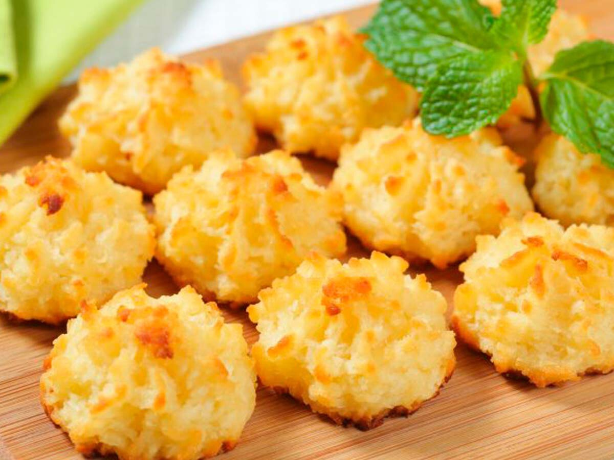

RECETA PARA HACER COCADAS

PREPARACIÓN:
- Lo primero de todo es precalentar el horno a unos 190º C.
La masa es muy fácil y rápida y según tengamos todo mezclado va directa al horno.
- Separamos las claras de las yemas, reservamos. Añadimos en un bol grande las claras y la yema junto con el azúcar y la sal y se baten bien hasta
obtener una mezcla espumosa y esponjosa. A continuación añadimos la harina previamente tamizada y batimos todo nuevamente.
- Finalmente añadimos el coco, mezclamos todo muy bien con un tenedor y ya tenemos la masa de las cocaditas, debe quedar una mezcla cremosa y homogénea.
Probadla, incluso cruda está deliciosa.
- Preparamos la bandeja del horno con papel vegetal o un tapete de silicona. Con una cuchara, dado que la masa es bastante cremosa,
vamos haciendo pequeñas porciones o bolas de la medida de una nuez.
- Las depositamos en la bandeja (con suficiente espacio para que cuando se hagan no se peguen unas a las otras, unos 3 cm son suficientes).
En mi bandeja de horno salen unas 12 cocadas por hornada, si queréis más solo tenéis que multiplicar las cantidades.
- Horneamos durante 15 minutos a 180 º C en la bandeja del medio. Con calor, aire arriba y abajo, hasta que estén doraditas.
Tal como os comenté todo depende del horno de cada uno, en algunos serán 14 minutos en otros 20.
- Se ve perfectamente cuando están listas porque van cogiendo un bonito color dorado. El único cuidado que debéis tener es que no se os quemen.
Cuando están doradas quedarán secas y tostadas por fuera y cremosas por dentro.
- Las sacamos del horno para que se endurezcan y enfríen. Es importante no tocarlas cuando aún están calientes puesto que podrían estar blandas.
Una vez frías se sacan de la bandeja del horno y ya estarán listas para servir.
- Las guardamos en un recipiente hermético para que no se ablanden y están de vicio, para repetir.
Tened cuidado porque son simplemente adictivas, altamente adictivas.
Inicio
Ingredientes 🥥🍳